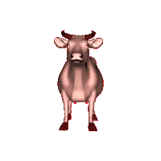

404 — Page Not Found
Like a flanged-and-serrated nut in an active ISO or DIN standard, this page does not exist. Click a tool from the navigation bar above, or click the cow for a random page when you are done enjoying this page.

Like a flanged-and-serrated nut in an active ISO or DIN standard, this page does not exist. Click a tool from the navigation bar above, or click the cow for a random page when you are done enjoying this page.
